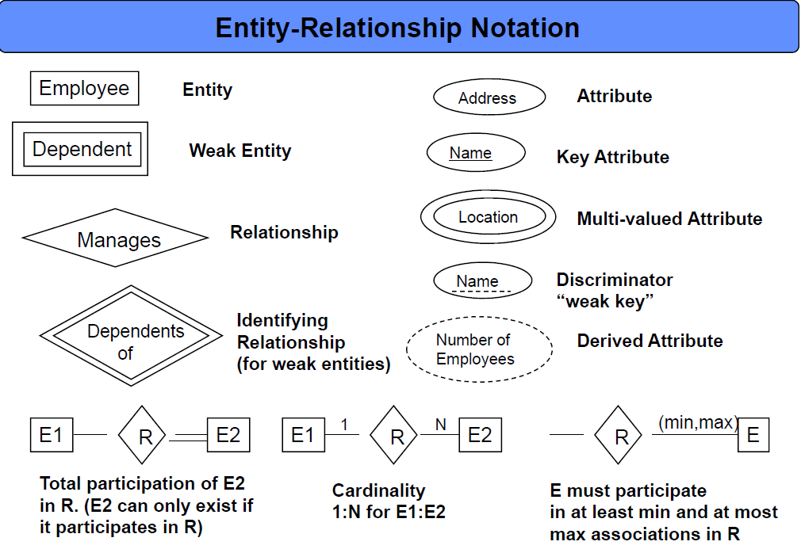

Assignment Submissions Instructions: Assignments must be submitted via culearn by the due date and time. Late assignments will not be accepted. See the Development Process Requirements below for what exactly to submit and how.
You may work on assignments in pairs if you want, in which case only one copy should be submitted with both your names on the files and in the ReadMe.txt file. If neither submits (because, for example, they thought the other one would) both get a mark of 0.
All assignments in this course will be based on itemized and categorized requirements. There will be four categories of requirements: Process Requirements, Functional Requirements, System Requirements, and Domain Requirements.
Process requirements (aka Software Engineering Requirements, Development Process Requirements, Good Practice Requirements) are requirements imposed by the software development process that is being followed by the developers. Here they include the requirements on how to submit your assignments successfully and have them marked. They do not have anything to do with the specific application being developed but rather pertain to the development process that is being used. They include the requirements that reflect how your assignment will be tested and marked. In assignments you will not get marks for meeting process requirements, instead you lose marks if they are not met -in some cases ALL of your marks.
Functional, System, and Domain requirements all pertain to the actual application being developed. Collectively these are referred to as the Design Requirements. In assignments you will get marks for those design requirements that are met. So the number of these requirements determine what the assignment will be marked out of.
Functional Requirements (aka User Requirements) pertain to what the user wants to do with the app and how it is to be operated. If a functional requirement is not met one would expect a user or client to notice that. The wording of functional requirements should make sense to the intended user or client. They should not contain references to "objects" in the object-oriented programming sense.
System Requirements (aka Constraints) are requirements imposed on the developer to make the development profitable (or evolvable, or resuable, ...). If a system requirement is not met the user, or client, of the app would likely not be aware of that. For example, the user of your app is not aware of whether you used objects to implement it or not. System requirements can make reference to "objects" in the object-oriented programming sense because the developers understand that.
Domain Requirements (aka Legal Requirements) are requirements imposed by the domain, or demographic, in which your app is intended to operate. For example, if you are making a PG13 movie about object-oriented development then the requirements that must be met for a movie to be considered PG13 are domain requirements. (Treating people as objects might be considered inappropriate for a young audience; treating objects as people will likey garner an R-rating.)
It will be an ongoing challenge in the course to fit requirements into one of the four categories or determine if there is an important missing category. In real life there are often many more requirement catagories.
Marking: This assignment is based on 18 design requirements numbered DR3.1...FR3.13 for a total of 36 marks.
Marks are awarded, or deducted, based on formalized requirements as follows:
| Req Type | Assignment Grading |
|---|---|
| R0.x | Critical Submission and Intent Requirements (Process Requirements). Assignment gets 0 if any critical submission |
| R0.x | Good Practice Requirements (Process Requirements). You lose 2 marks for each good practice |
| Rx.x | Design Requirements. You earn 2 marks for each design requirement (green) satisfied and well implemented; 1 mark if it's partly met or met but not well implemented; and 0 if it's not met or attempted. |
| Rx.x | Out of Scope Requirements. Requirements that are not coloured pertain to the project as a whole be are not being evaluted in this scope (assignment). |
The following requirements will pertain to all your assignments regardless of what your application is supposed to do (i.e. regardless of the design requirements). These requirements are intended to ensure that your code is readable and maintainable by other programmers (or markable by TA's in our case), robust (it does not crash from bad pointer references or memory allocation problems), and follows good object-oriented programming practice. You will lose 2 marks from your total assignment mark for each of the following requirements that is not satisfied. However if you do not satisfy requirement PR0.1, PR0.2 or PR0.3 you will get zero for the assignment mark.
PR0.1 [Assignment mark = 0 if not met] UNIQUENESS REQUIREMENT. The solution and code you submit MUST be unique. That is, it cannot be a copy of, or be too similar to, someone else's assignment, or code found elsewhere. A mark of 0 will be assigned to any assignment that is judged by the instructors or the TA's not to be unique.
You are, however, free to use any code posted on our course web (e.g. notes, sample code, tutorial demo code and answers) as part of you assignment solutions.
PR0.2 [Assignment mark = 0 if not met] CODE SUBMISSION REQUIRMENTS: For the purposes of assignments your code and supporting documents must be submitted to culearn and comply with the following.
1) You should submit C++ source code file and any supporting script files, documentation files required and, when appropriate the associated make file to assist the compilation. Your name and student number should be at the top of each file. There should always be a ReadMe.txt file with your assignment. If you are working with a partner, both names and student numbers must appear on the files and only submit one copy of the assignment to culearn.
2) COMPRESSION If your assignment files are compressed we will accept only .tar, .tar.gz, or .zip format compatible with one of the following three linux commands for extraction:
tar -xvf filename.tar
tar -xvf filename.tar.gz
unzip filename.zip
3)ReadMe.txt: Your assignment must be accompanied by a ReadMe.txt file in which the following should appear:
-Which extraction command should be used to uncompress your assignment files.
-Which g++ compiler command should be executed to compile your code.
-Instructions on what script, or scripts to run to demonstrate your testing.
4) In general you should provide a testing script, or main program that runs appropriate test cases to demonstrate that the design requirements are being met. (Not all requirements can be demonstrated like that, but functional requirements usually can be -especially if we are building command line applications.)
PR0.3 [Assignment mark = 0 if not met] CODE COMPILATION and TESTING:
The TA must be able to compile your code using the g++ compiler installed in our 2401-F19.ova virtual box linux image. (A current gcc installation should be compatible with that, but you should check.). The TA will run the g++ command specified in your ReadMe.txt file and when compiling is complete run your exectuable to begin verifying the assignment requirements. If your code cannot be compiled as described the assignment mark will be zero. (The TA's will not debug your code in an effort to get it to compile.)
PR0.4 CODE ORGANIZATION: Your code files should contain only one .cpp file containing the substring "main" in the title and that file should have the int main() entry point function for your code. Your object-oriented classes should each be represented in two files classname.h and classname.cpp. The .h header files should contain only type declarations and not executable code (method bodies).
PR0.5 VARIABLE AND FUNCTION NAMES: All of your variables, methods and classes should have meaningful names that reflect their purpose. Do not follow the convention in math courses where they say things like: "let x be the number of customers and let y be the number of products...". Instead call your variables numberOfCustomers or numberOfProducts. Your program should not have any variables called "x" unless there is a good reason for them to be called "x". (One exception: it's OK to call simple for-loop counters i,j and k etc. when the context is clear and VERY localized.)
PR0.6 MEANINGFUL CONSTANT NAMES: Constant values should have meaningful names and not just be represented as numbers or strings in expressions. For example don't say:
cin.getline(input, 80);
rather say:
cin.getline(input, MAX_INPUT_LENGTH);
PR0.7 VARIABLES: All instance variables in your classes should be private, unless a specific design requirements asks for them to be public (which is unlikely). It is good programming practice to design objects that provide services to others through their public methods. How they store their variables is their own private business. C or C++ unbounded arrays should not be used as public data structures. They should be encapsulated in a class which takes care of their length or number of elements. Also methods used soley by a class for its own housekeeping, and which are not considered part of the public inteface, should be in the private section of a class.
Your code should not be coupled through global variables. That is, objects should not communicate through the existance of global variables. Instead pass appropriate objects through constructor parameters.
PR0.8 ROBUSTNESS REQUIREMENTS: Your program should not crash when the TA is marking it because of a bad pointer dereferences, out of bounds error memory access, or memory leaks or double deletions. We get especially annoyed by out of bounds "off by one" errors! Your code should not have any memory leaks or double deletions. Moreover the heap memory should be empty when your procedure main() returns. That is, all heap objects should be properly deleted before the program exits.
PR0.9 COMMENTING REQUIREMENTS: Comments in your code must coincide with what the code actually does. It is a common bug for people to modify code and forget to modify the comments and so you end up with comments that say one thing and code that actually does another. Don't use comments to clarify poor variable or method names -instead choose good variable names and method names that makes the code more "self-commenting".
PR0.10 OUTPUT LABELING REQUIREMENTS: Your programs output must have sufficient comments or remarks so that the output can understood. Don't have your program just write out a bunch of integers with no indication of what they mean or what the test they supposedly demonstrate. The TA's should be able to read and understand your output WITHOUT having to look at your code to see what the output means. It is a good idea to refer specifically to the numbered design requirements in your output to help indicate which requirement you are demonstrating.
VERY IMPORTANT:
Requirements tend to make sense to the person who wrote them because that person knows what they were trying to say. You don't know what they were trying to say, only what they actually did say. So you need to ask lots of questions when things are not clear. A picture is worth a thousand words and a requirement fix is worth a thousand programing fixes.
Any sample code fragments provided with assignments might have bugs (although none are put there intentionally). It is part of your job to identify errors in the code and in the requirements and seek clarification.
This development project pertains to the scenario detailed in the Background section of Assignment #1 and is a continuation of the work done in assignments #1 and #2.
Some of the new requirements in this assignment likely require that you refactor some of your code from assignment #2.
Refactoring is modifying or re-organizing working code to improve its: readilbiltiy, reusability, maintainability, scalability, encapsulation, decoupling, fragility, efficiency etc. In other words, improve it in some way not directly associated with satisfying new functional requirements or simply fixing bugs. Refactoring does not typically add new functional capabilities and is not bug fixing.
Our development client has decided they want to use an SQLite database to represent and presist the application's data about recordings, users, playlists etc. An inital beatles.db database has been created to reflect the ER data model (presented again below). This beatles.db database is the one used for tutorials 05 and 06. This assignment carries on where tutorial 06 leaves off.
Here again is the ER data model that the database is based on.
Here is a legend for the ER model symbols. The main feature of ER models are entities, relationships and keys.

Here is the scheme of the beatles.db database:
And finally here is a schema diagram showning the foreign keys. Foreign Keys are columns in one table that refer to the primary key columns of another table. This is how relationships (diamond shapes on an ER model) are implemented in relational databases.

This development phase (assignment) has the following scope.
For this assignment we will add persistence to the data by using an SQLite database. You need to support all the same commands that were part of assignment #2 but changes made using the add and delete commands must be reflected in the database. Also displaying results to the user with the show commands must be consistent with how the data appears in the database. All the dot commands must still function but they do not have any affect of the database data.
This assignment will require you to rework, or refactor, code you wrote in assignment #2. In particular there might be things that you did in main memory that you may not need to do if the data is available by accessing the SQLite database.
When the application launches we will no longer be relying on an insert data script but rather the data will already be resident in the SQLite database.
The following anticipated requirements are being left out of this phase (assignment): searching for songs and recordings, authentication of users. But now there are persistence requirements in this assignment. That is, your data changes, as a result of your user commands, will have to be saved to the database and be there the next time the application is launched.
The main C++ programming capabilities you will likely need for the assignment are:
Accessing an SQLite database from C++ code (done in tutorial 06).
Learning some really basic SQL statements like insert and delete.
Learning some really basic SQL querying using select.
Refactoring your assigment #2 code (or our assignment #2 answer code if you prefer).
The application is required to maintain Referential Integrity at all times. Referential Integrity requires that at no time can data refer to a non existing object. For example, if a song is removed from the songs collection then no playlist or track should refer to that song since it no longer exists. Now however we also have to worry about referential integerity of the data in the database.
DR3.1 Any song, CD, or Album titles or any band names should always be displayed for the user in title case. That is, the first letter of each word should be capitalized and any title or name that starts with the word "The" should be displayed with the "The" at the end. (e.g. The Beatles should be displayed as Beatles, The). Any application commands that display such strings for the user must display them in title case. Note we cannot assume that the data stored in the SQLite database is already in title case format.
DR1.2) Any searches for song titles or recording titles should ignore both case and punctuation. For example "take the A train" should match "Take The 'A' Train". (We are not implementing search in this assignment so this should "automatically" be satisfied.)
DR1.3) Any searches for song titles or recording titles should accept placeholder characters repesented by a "*". From example "* Ipanema" would match "The Girl From Ipanema". (We are not implementing search in this assignment so this should "automatically" be satisfied.)
SR3.1 The application should be written in C++ and have a command line interface.
SR3.2 The application code should be fully object-oriented. That is, except for the int main(){} entry point function and maybe some initialization helper functions, all funtionality should be through methods of some class (either static or instance methods).
SR3.3 The application should decouple data objects from those used to implement the user interface or application control. Specifically any objects of types like Song, Recording, Track, User, or Playlist should have NO awareness of the user interface or application control objects.
SR3.4 The application should use an SQLite database for presistent data.
FR3.1 REPL Loop: When the application launches it should present the user with a command line terminal and prompt ready to receive commands. When a command executes the results should be displayed for the user followed by another prompt and be ready to receive the next command. (like the bash terminal in linux).
FR3.2 All the dot commands described in assignment 2 (in the latest help.txt file) should be functional but should not affect the data in the database. In particular the .log command should continue to use the OS file system and not the SQLite database for logs.
FR3.3 When the application launches it should be initialized with, or reflect, the data that is currently in it's SQLite database file. That is, it must no longer rely on an insert data script for intialization. The data in the database should contain at least the data in the supplied beatles.db database but you can add more data if you want.
FR3.4 When the application quits its data should be preserved in the SQLite database.
FR3.5 The application should implement all the add commands described in the latest help.txt file. The resulting data changes should be reflected in (written to) the SQLite database.
FR3.6 It should be possible to see the change in the database after the execution of the add command. For example by using the sqlite3.exe application and directly accessing the database.
FR3.7 The application should implement all the delete commands described in the latest help.txt file. The resulting data changes should be reflected in (written to) the SQLite database.
FR3.8 It should be possible to see the change in the database after the execution of the delete command. For example by using the sqlite3.exe application and directly accessing the database.
FR3.9 The application should implement all the show commands described in the latest help.txt file. The data displayed for the user should be consistent with that in the database at the time when the show command is executed.
FR3.10 If external changes are made to the database (like with the sqlite3.exe application) those changes should be reflected in the results of any subsquent show commands. That is, the behaviour of the show command should be consistent with the state of the SQLite database at the time that show was executed.
FR3.11 The application should still support reading scripts with the .read command and any add or delete commands in the script should be written to the SQLite database.
FR3.12 The application shall maintain referential integrity at all times. Referential integrity requires that at no time can the data refer to something that does not exist. For example if a song is removed from the application by removing it from the Songs collection it cannot be referred to by a Playlist or Track object. The data stored in the SQLite database must not violate the referential integrity. That is, no foreign key must ever refer to a primary key value that does not exist in the database.
FR3.13 Referential Integrity conflicts shall be resolved using a "Delete With Extreme Prejudice" policy. This policy requires that any references to a non existing object should be deleted. For example, if a song is removed from the Songs collection then any references to it should be deleted by, for example, removing playlist items or removing Track objects from the tracks collection. Data in the SQLite database the violates referential integrity should be deleted by the application when executing commands.